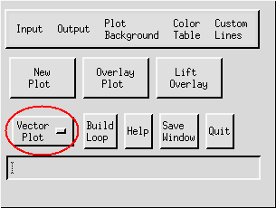
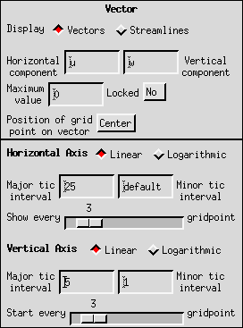
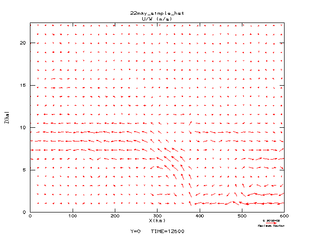

This document provides instructions for building vector
plots.

Procedures:
- First, load a data file by selecting "Input" from the IVE Main
Window, or by typing FILE at the command
line. This activates the Window/Slicer Widget depicted below.
- Next select a FIELD.
- At the Window/Slicer Widget (shown below), "fix" all
coordinates except for the two variables that will become the
ordinate and the abscissa in your plot. Adjust the coordinate
values as desired.
 Window/Slicer Widget
Window/Slicer Widget
- Then, make sure that "Vector Plot" is displayed in the IVE Main
Window (see TYPE).

IVE Main Window
- Next, specify the attributes of your plot using the Properties
Window (pictured below). The Properties Window contains the
following options for vector plots:

Properties Window
- Display: Click on the appropriate button to select either
Vectors or Streamlines for your plot.
- Horizontal and Vertical Components: Here, you must represent
the values of the vector components using either a single field
variable or a mathematical expression in terms of the field
variables. For example, to plot a temperature gradient field, the
horizontal component could be expressed as D[T:X] and the vertical
component could be expressed as D[T:Z].
- Maximum Value: The Maximum Value scales all vectors in your
field to the distance between plotted gridpoints (see VECTOR_MAX).
- Locked: This option allows you to lock the Maximum Value so
that it remains fixed during successive plots. It is useful when
creating loops of vector plots.
- Position of Grid Point on Vector: This selection determines the
position of each vector relative to the grid point. Three options
are available: Tail, Head, and Center.
- Axis properties: The axis scales and tic intervals can be
specified as in any other IVE plot.
- Gridpoint spacing: By varying the values of the slider bars in
the Properties Window, you control the spacing of the vectors both
horizontally and vertically (see also VECTOR_INTERVAL). By varying the spacing
of the vectors vertically, you also vary the magnitudes of the
displayed vectors.
- Finally, when all parameters have been set, click on "New Plot"
in the IVE Main Window to display the plot, or "Overlay Plot" to
overlay an existing plot (see PLOT and OVERLAY PLOT).
Example:
- Pictured below is a sample vector plot produced by IVE:

back to index